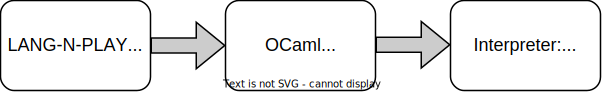

Implementing Language-Oriented Programming Languages
with Higher-Order Logic Programming
Overview
Higher-Order Logic Programming
Language-Oriented Programming
Implementation of LANG-N-PLAY
Higher-Order Logic Programming
λProlog
Typed Logic Programming
Formulae as First-Class Citizens
Hypothetical Reasoning
Typed Logic Programming
kind city type.
type munich, ulm, frankfurt, cologne, berlin city.
type flyTo city -> city -> prop.
type connected city -> city -> prop.
Typed Logic Programming
kind city type.
type munich, ulm, frankfurt, cologne, berlin city.
type flyTo city -> city -> prop.
flyTo munich ulm.
flyTo frankfurt cologne.
flyTo cologne berlin.
type connected city -> city -> prop.
connected X X.
connected X Z :- flyTo X Y , connected Y Z.
connected X Z :- connected X Y , flyTo Y Z.
Formulae as First-Class Citizens
type getCheck city -> city -> prop -> prop.
getCheck X X true.
getCheck X Y (connected X Y).
type check city -> city -> prop.
check X Y :- getCheck X Y F, F.
{!
Type T ::= int | (list T),
Expression e ::= zero | (succ e) | nil | (cons e e)
| (elementAt e e),
Value v ::= zero | (succ v) | nil | (cons v v),
Context C ::= (succ E) | (cons C e) | (cons v C)
| (elementAt C e) | (elementAt v C),
Environment Gamma ::= [x : T],
Relation ::= Gamma |- e : T | e --> e,
StartingCall ::= empty |- e : T | e --> e.
Gamma |- x : T <== x : T in Gamma,
Gamma |- zero : int,
Gamma |- (succ e) : int <== Gamma |- e : int,
Gamma |- nil : (list T),
Gamma |- (cons e1 e2) : (list T) <==
Gamma |- e1 : T /\ Gamma |- e2 : (list T),
Gamma |- (elementAt e1 e2) : T <==
Gamma |- e1 : int /\ Gamma |- e2 : (list T),
(elementAt zero (cons V1 V2)) --> V1,
(elementAt (succ V) (cons V1 V2)) --> (elementAt V V2)
!}
Language Definitions
{! list !}
elementAt 2 [ 1, 2, 3, 4 ]
let-in Blocks
let listLang = {! list !}
in
Language Execution
let listLang = {! list !}
in listLang> elementAt 2 [ 1, 2, 3, 4 ] // 3
Language Execution
let listLang = {! list !}
let plusLang = {! plus !}
in listLang> elementAt 2 [ 1, 2, 3, 4 ] // 3
Language Execution
let listLang = {! list !}
let plusLang = {! plus !}
in plusLang> plus 1 2 // 3
Language Execution
let listLang = {! list !}
let plusLang = {! plus !}
in plusLang> plus (listLang> elementAt 2 [ 1, 2, 3, 4 ])
(listLang> elementAt 0 [ 1, 2 ])
Language Unification
let combinedLang = {! list !} U {! plus !}
Language Unification
let combinedLang = {! list !} U {! plus !}
in combinedLang> plus (elementAt 2 [ 1, 2, 3, 4 ])
(elementAt 0 [ 1, 2 ])
Rule Removal
let combinedLang = {! list !} U {! plus !}
in remove ( ... )
from combinedLang
Implementation of LANG-N-PLAY

kind expLO type.
type stepLO expLO -> expLO -> prop.
type valueLO expLO -> prop.
Language Definitions
{!
Type T ::= int | (list T),
Expression e ::= zero | (succ e) | nil | (cons e e)
| (elementAt e e),
Value v ::= zero | (succ v) | nil | (cons v v),
Context C ::= (succ E) | (cons C e) | (cons v C)
| (elementAt C e) | (elementAt v C),
Environment Gamma ::= [x : T],
Relation ::= Gamma |- e : T | e --> e,
StartingCall ::= empty |- e : T | e --> e.
Gamma |- x : T <== x : T in Gamma,
Gamma |- zero : int,
Gamma |- (succ e) : int <== Gamma |- e : int,
Gamma |- nil : (list T),
Gamma |- (cons e1 e2) : (list T) <==
Gamma |- e1 : T /\ Gamma |- e2 : (list T),
Gamma |- (elementAt e1 e2) : T <==
Gamma |- e1 : int /\ Gamma |- e2 : (list T),
(elementAt zero (cons V1 V2)) --> V1,
(elementAt (succ V) (cons V1 V2)) --> (elementAt V V2)
!}
Language Definitions
language
[
typeOf nil (list T) ;
typeOf (cons E1 E2) (list T) :- typeOf E1 T,
typeOf E2 (list T) ;
typeOf (elementAt E1 E2) T :- typeOf E1 int ,
typeOf E2 (list T) ;
step ( elementAt zero (cons V1 V2)) V1 :- value V1 ,
value V2 ;
step ( elementAt ( succ V) (cons V1 V2)) (elementAt V V2)
:- value V1 , value V2 ;
value nil ;
value (cons V1 V2) :- value V1 , value V2 ;
step ( elementAt E1 E2) (elementAt E1' E2) :- step E1 E1';
step ( elementAt V1 E2) (elementAt V1 E2') :- step E2 E2';
... the rest of contextual reduction rules ...
]
Language Definitions
Language Definitions
Language Execution
Language Unification
Rule Removal
Summary
Higher-order Formulae naturally model language definitions
Hypothetical Reasoning makes it possible to load language definitions at runtime